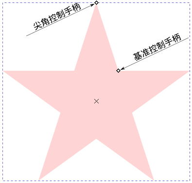
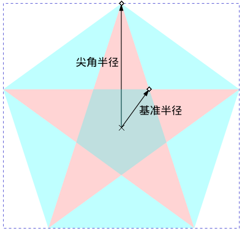
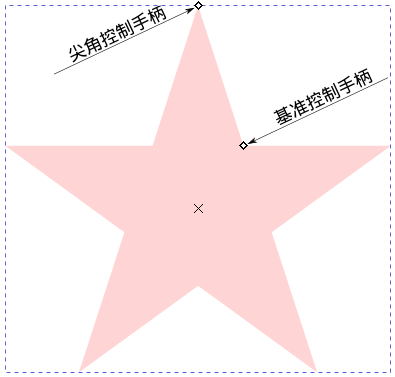
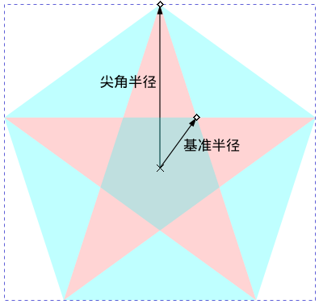

快捷键：＊ 或者 Shift+F9
星形工具( )可以用来画星形或者正多边形。
画一个星形
用鼠标左键点击星形工具( )，此时星形工具被激活，然后鼠标左键在画布上点击并斜向拖动一段距离，然后松开鼠标即可。
画一个多边形
用鼠标左键点击星形工具，此时星形工具被激活，然后在窗口上方的星形工具选项中点击第一项多边形图标( )，之后鼠标左键在画布上点击并斜向拖动一段距离，然后松开鼠标即可。
按空格键可以临时切换到选择工具( )，再按空格键则切换回星形工具。
( )：激活此选项后，可以画等边多边形。
( )：激活此选项后，可以画星形。
( 角 )：边或角的数量。比如正六边形，这里数值应该为6；五角星形，这里数值应该为5 。
( 辐条比例 )：基准半径与尖角半径的比值，即尖角手柄到星形中心的距离除以基准手柄到星形中心的距离(参考下面右图)。画星形时会显示此选项，用来控制星形的形状，比如，一个正五角星的话，这里应该填写0.382 ；正六角星应该填写0.577。
( 圆角 )：把星形/多边形的尖角改为圆角。数值为0时表示保持尖角形态，不作圆角处理。
( 随机化 )：星形/多边形的尖角角度随机取值。注意，此方法会导致画出来的形状很奇怪。
  提示 驿窗注：上图中的尖角手柄未必在最上方的角上，也可能在另外四个尖角中的一个角上，具体位置取决于星形绘制时鼠标拖动的方向。
 
提示
驿窗注：上图中的尖角手柄未必在最上方的角上，也可能在另外四个尖角中的一个角上，具体位置取决于星形绘制时鼠标拖动的方向。
用星形工具( )点击星形，然后点击并拖动 尖角 手柄可以缩放尖角半径的长度(基准半径长度保持不变)和改变星形的角度。
如果上面第1步操作的同时按住Ctrl键，可以保持尖角半径的方向保持不变。
如果上面第1步操作的同时按住Shift键，可以调整尖角为圆角。
如果上面第1步操作的同时按住Alt键，可以调整尖角的角度为随机数值，最终得到的形状无法预测。
用星形工具( )点击星形，然后点击并拖动 基准 手柄可以缩放基准半径的长度(尖角半径长度保持不变)和改变基准半径的角度。
如果上面第5步操作的同时按住Ctrl键，可以保持基准半径的方向保持不变。
如果上面第5步操作的同时按住Shift键，可以调整尖角为圆角。
如果上面第5步操作的同时按住Alt键，可以调整基准的角度为随机数值，最终得到的形状无法预测。
{kind=link}
{kind=link}
{kind=link}
{kind=link}
{kind=link}
{kind=link}